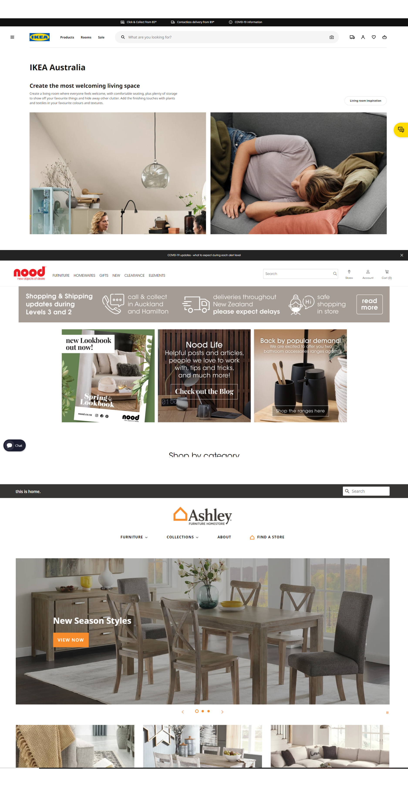
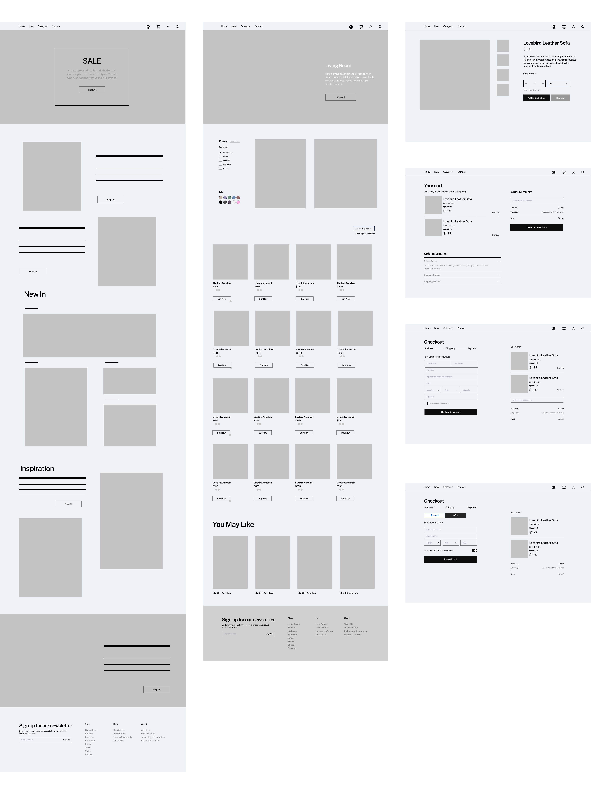
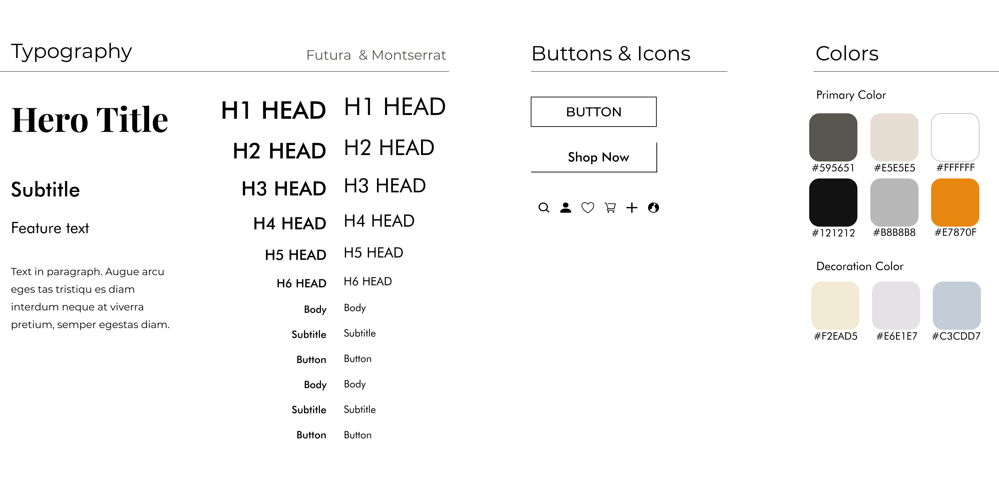

Maynooth Furniture
Design Goal
Maynooth Furniture is a new business selling affordable high-end design furniture made in Ireland. The objective of this project is to build an e-commerce website for Maynooth Furniture which would allow people to browse and purchase furniture for home- delivery.
- Client: Maynooth Furniture
- Type: eCommerce, Web UI/UX design
- Date: 02.02.2021
- Role: UI/UX Designer,User Research, Wireframing, Prototyping, Testing
- Tag: Furniture, Home decor
Challenge
Through the persona, we realized that the client may not be tech-savy but at the same time she likes to use Pinterest to gather her design ideas. As a result, keeping the website's digital identity in line with the brand's unique aesthetics, the challenge was not only to design an appealing website but also keep its interface clean, easy to navigate while providing the users with sufficient style and design ideas.
Also the key challenge faced was to set the right balance between the user’s expectations and the owner’s vision.
Research
I browsed through similar websites to set a point of reference and to get familiar with the user flow for an e-commerce website. Initially, I started by carrying out my research to gain insight about everything required for a website meant for furniture by browsing through our competitors. I leafed through IKEA, Ashley Furniture and nood. From those websites, I sketched out the user flow of each websites and found some inspirations and drawbacks.

Wireframes
I started wireframing while following the requirements and feature list carefully. I made sure to include the common necessary features, easily identifiable icons and labels that would enable the user to navigate through the website easily. In order to keep the UI of the entire website consistent, it was important to achieve a cohesive visual identity, while keeping all the design principles in mind.
The research and user persona helped me in creating the wireframe, and the flow of the website. After studying the competitors and exploring similar websites I came up with the structure of the website. The wireframe focused on the flow from the homepage, right the way through to the product checkout process. This would give the user the chance to experience the full flow.


Design System
I wanted to go with something that would give out warm homely and high-end vibes while best describing the quality of furniture. I chose morandi colors as I felt that would be best suited for a furniture website giving it a comfy relax feeling. Morandi colors are so versatile that they complement a huge range of colors. Teamed with other neutrals, such as black, white, or gray, they are effortlessly chic and elegant.
